Era 1: Ancient Greece & Hellenism
Causal Progression Flow & Empirical Research Database
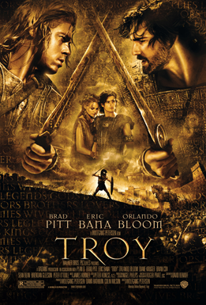
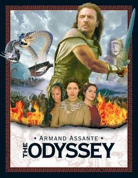

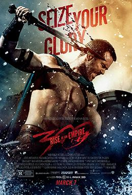
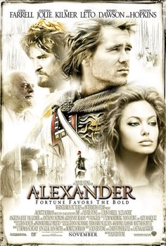
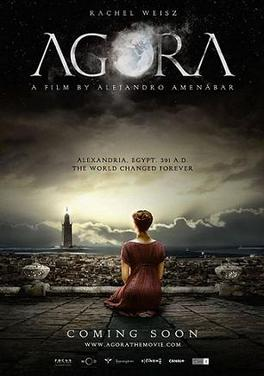
Confucius (551–479 BC) lived contemporaneously with Socrates and the Persian Wars! Qin Shi Huang unified China and constructed the Great Wall (~221 BC).
Siddhartha Gautama attained Parinirvana (~5th c. BC). Alexander's campaign against King Porus spawned Greco-Buddhist Gandharan art—the world's first anthropomorphic Buddha statues featuring Greek drapery.
Era 6: Industrial Revolution & Capitalism
Causal Progression Flow & Empirical Research Database
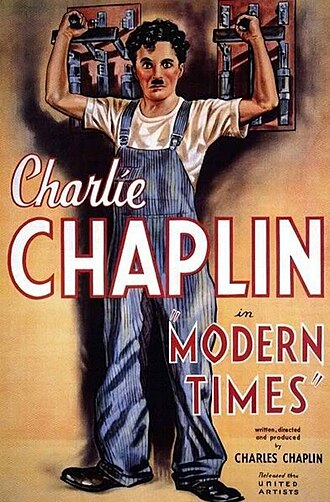
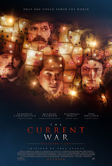


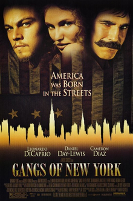
Britain launched the Opium Wars, forcing the Treaty of Nanking and the cession of Hong Kong. Decades of internal crises followed with the Taiping Rebellion (20M dead) and the Boxer Uprising, precipitating the Qing collapse.
King Rama V abolished slavery, constructed railways, and centralized modern bureaucracy. During the 1893 Paknam Crisis, French gunboats blockaded Bangkok, forcing Siam to concede peripheral territories to preserve national independence.
Era 8: World War II
Causal Progression Flow & Empirical Research Database


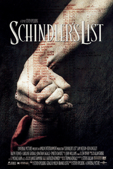
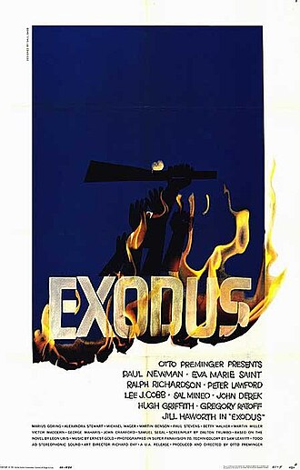
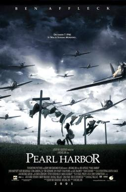
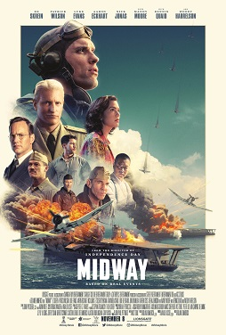
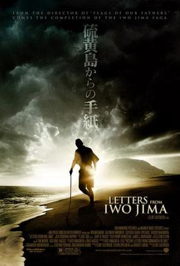
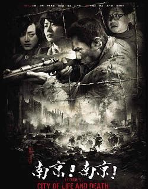
The KMT and CCP formed a temporary United Front, pinning down over one million Japanese imperial troops in mainland China and suffering over 15 to 20 million civilian casualties in defense of the Allied war effort.
Alan Turing built the Bombe machine at Bletchley Park, cracking the German naval Enigma cipher, while Tommy Flowers created Colossus, the world's first programmable digital electronic computer.
Following the December 1941 Japanese invasion, Ambassador Seni Pramoj and Regent Pridi Banomyong formed the clandestine Free Thai Movement (Seri Thai), coordinating with the US OSS and British Force 136 so Thailand emerged unvanquished.
Era 9: Cold War & Contemporary World
Causal Progression Flow & Empirical Research Database

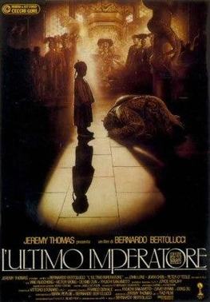
Mao Zedong's radical backyard steel furnaces and communes caused widespread famine. In 1966, Mao launched the Cultural Revolution, mobilizing teenage Red Guards to purge traditional culture before Deng Xiaoping's 1978 economic reforms.
The US Dodge Plan and $3.5 billion in Korean War procurement contracts jump-started Japan's high-speed industrial miracle, leading to the Shinkansen bullet train and consumer electronics dominance.
From Sputnik in 1957 to the Apollo 11 moon landing in 1969. In October 1962, the world stood on the brink of total thermonuclear war during the thirteen-day Cuban Missile Crisis before Kennedy and Khrushchev struck a secret trade agreement.
On November 9, 1989, East German citizens surged across checkpoints to dismantle the Berlin Wall, bringing a peaceful end to forty-four years of European partition and dissolving the Warsaw Pact.